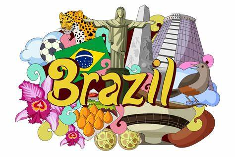
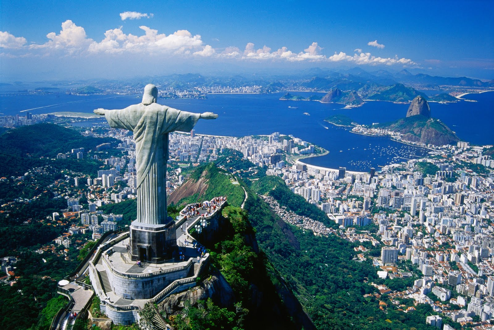
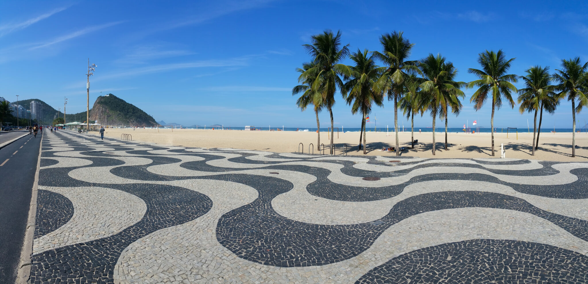
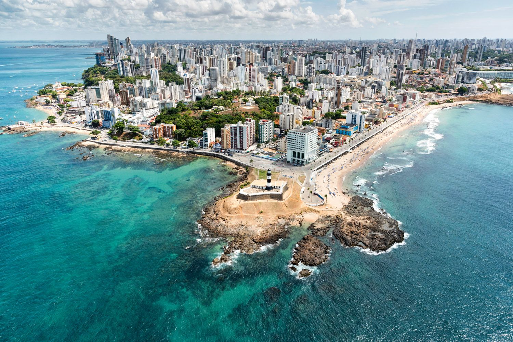
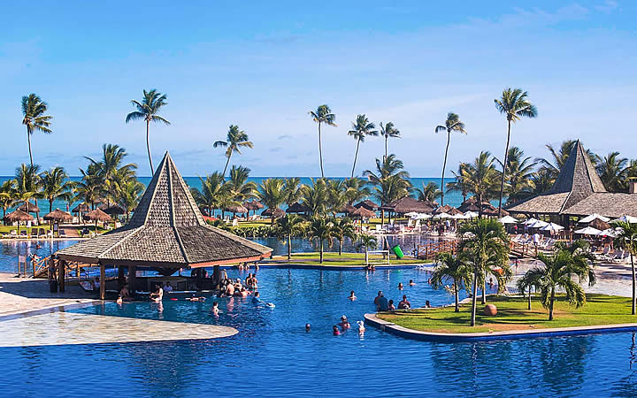
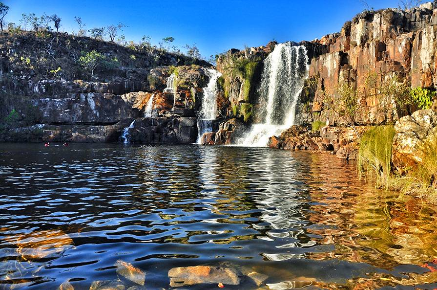

Cultura Brasileira
A cultura brasileira é multicultural e diversificada, formada pela influência de diferentes povos, como indígenas, africanos, europeus e asiáticos. Alguns aspectos da cultura brasileira incluem: festas, danças, músicas, lendas, esportes e Etc. A cultura brasileira, assim como a formação étnica do povo brasileiro, é vasta e diversa. Nossos hábitos culturais receberam elementos e influências de povos indígenas, africanos, portugueses, espanhóis, italianos e japoneses, entre outros, devido à colonização, à imigração e aos povos que já habitavam aqui.São elementos característicos da cultura brasileira a música popular, a literatura, a culinária, as festas tradicionais nacionais, como o Carnaval, e as festas tradicionais locais, como as Cavalhadas de Pirenópolis, em Goiás, e o Festival de Parintins, no Amazonas. A religião, como elemento cultural, também sofreu miscigenação, formando o que chamamos de sincretismo religioso. O sincretismo religioso brasileiro reúne elementos do candomblé, do cristianismo e
Rio de Janeiro
Rio de Janeiro, simplesmente referido como Rio, é um município brasileiro, capital do estado homônimo, situado no Sudeste do país. Um dos maiores destinos turísticos internacionais no Brasil,[8] na América Latina e também do Hemisfério Sul. A capital fluminense é a cidade brasileira mais conhecida no exterior,[9] funcionando como um "espelho", ou "retrato" nacional, seja positiva ou negativamente. É a segunda maior metrópole do Brasil (depois de São Paulo), a sétima maior da América e a décima oitava do mundo. Sua população segundo o censo de 2022 do IBGE era 6 211 223 habitantes.[1] Tem o epíteto de Cidade Maravilhosa,[10] e os que nela nascem são chamados cariocas. Classificada como uma metrópole, exerce influência nacional, seja do ponto de vista cultural, econômico ou político brasileiros,[11] e é um dos principais centros econômicos, culturais e financeiros do país, sendo internacionalmente conhecida por diversos ícones culturais e paisagísticos, como o Pão de Açúcar, o morro do Corcovado com a estátua do Cristo Redentor, as praias dos bairros de Copacabana, Ipanema e Barra da Tijuca, entre outras; os estádios do Maracanã e Nilton Santos; o bairro boêmio da Lapa e seus arcos; o Theatro Municipal do Rio de Janeiro; as florestas da Tijuca e da Pedra Branca; a Quinta da Boa Vista; a Biblioteca Nacional; a ilha de Paquetá; o réveillon de Copacabana; o carnaval carioca; a Bossa Nova e o samba. Parte da cidade foi designada Patrimônio da Humanidade pela UNESCO em 1 de julho de 2012. Representa o segundo maior PIB do país[14] (e o 30.º maior do mundo[15]), estimado em cerca de 354,981 bilhões * de reais (IBGE/2023),[16] e é sede das duas maiores empresas brasileiras — a Petrobras e a Vale, e das principais companhias de petróleo e telefonia do Brasil, além do maior conglomerado de empresas de mídia e comunicações da América Latina, o Grupo Globo. Contemplado por grande número de universidades e institutos, é o segundo maior polo de pesquisa e desenvolvimento do Brasil, responsável por 19% da produção científica nacional, segundo dados de 2005.[18] Rio de Janeiro é considerada pela Globalization and World Cities Research Network (GaWC) como uma cidade global beta-. A cidade foi, sucessivamente, capital da colônia portuguesa do Estado do Brasil (1763–1815), depois do Reino Unido de Portugal, Brasil e Algarves (1815–1822), do Império do Brasil (1822–1889) e da República dos Estados Unidos do Brasil (1889–1968) até 1960, quando a sede do governo foi transferida definitivamente para a recém-construída Brasília. Naquele ano, o Rio foi transformada em uma cidade-estado com o nome de Guanabara e, somente em 1975, torna-se a capital do estado do Rio de Janeiro. Etimologia A Baía de Guanabara, à margem da qual a cidade se organizou, foi descoberta pelo explorador português Gaspar de Lemos em 1 de janeiro de 1502.[20] Embora se afirme que o nome "Rio de Janeiro" tenha sido escolhido em virtude de os portugueses acreditarem tratar-se a baía da foz de um rio, na verdade, à época, não havia qualquer distinção de nomenclatura entre rios, sacos e baías — motivo pelo qual foi o corpo d'água corretamente designado como rio. História Ver artigo principal: História da cidade do Rio de Janeiro Colonização portuguesa e invasões estrangeiras Ver também: Brasil Colônia, França Antártica, e Invasões francesas no Brasil O litoral do atual estado do Rio de Janeiro era habitado por índios do tronco linguístico macro-jê há milhares de anos. Por volta do ano 1000, a região foi conquistada por povos de língua tupi procedentes da Amazônia. Um destes povos, os tamoios, também conhecidos como tupinambás, ocupava a região ao redor da Baía de Guanabara no século XVI, quando os portugueses chegaram à região.

Corcovado - Rio de Janeiro
O Corcovado é um dos morros da cidade do Rio de Janeiro, célebre no Brasil e no mundo pela sua estátua do Cristo Redentor de 38 metros de altura. O Cristo Redentor é um dos principais símbolos do país e oferece uma privilegiada vista panorâmica da cidade do Rio de Janeiro. Em 2003 foram concluídas as obras de instalação de elevadores e escadas rolantes no local. Antes, era preciso vencer 220 degraus para desfrutar da paisagem. No dia 7 de julho de 2007, a estátua do Cristo Redentor foi eleita em uma votação uma das novas sete maravilhas do mundo. A votação teve o patrocínio da ONU, porém, sem ter um caráter oficial. O morro do Corcovado possui 710 metros de altura e encontra-se no Parque Nacional da Tijuca. O Corcovado situa-se ao oeste do centro da cidade, mas mesmo assim pode ser observado desde longas distâncias. Corcovado Artigo Discussão Ler Editar Ver histórico Ferramentas Aspeto ocultar Texto Pequeno Padrão Grande Largura Padrão Largo Cor (beta) Automático Claro Noite Nota: Para outros significados, veja Corcovado (desambiguação). Corcovado Morro do Corcovado Corcovado está localizado em: Brasil Corcovado Coordenadas 22° 57' 8.7" S 43° 12' 42" O Altitude 710 m (2 329 pés) Localização Rio de Janeiro, Rio de Janeiro, Brasil Cordilheira Maciço da Tijuca Rota mais fácil Norte (Cosme Velho) O Corcovado é um dos morros da cidade do Rio de Janeiro, célebre no Brasil e no mundo pela sua estátua do Cristo Redentor de 38 metros de altura. O Cristo Redentor é um dos principais símbolos do país e oferece uma privilegiada vista panorâmica da cidade do Rio de Janeiro. Em 2003 foram concluídas as obras de instalação de elevadores e escadas rolantes no local. Antes, era preciso vencer 220 degraus para desfrutar da paisagem. No dia 7 de julho de 2007, a estátua do Cristo Redentor foi eleita em uma votação uma das novas sete maravilhas do mundo. A votação teve o patrocínio da ONU, porém, sem ter um caráter oficial.[1] O morro do Corcovado possui 710 metros de altura e encontra-se no Parque Nacional da Tijuca. O Corcovado situa-se ao oeste do centro da cidade, mas mesmo assim pode ser observado desde longas distâncias. Toponímia O seu cume, onde se destaca a estátua do Cristo Redentor, pode ser avistado desde muito longe tanto da Baixada Fluminense ou até da Região Serrana Fluminense, como por navegantes vindos do mar aberto como do fundo da Baía da Guanabara. O primeiro nome do Corcovado dado pelos portugueses, ainda no século XVI, mais precisamente pelo navegador italiano, Américo Vespúcio, era Pináculo, da Tentação, em alusão à passagem bíblica da Tentação Final de Cristo, onde o diabo leva Jesus para um lugar "muito alto", que o apóstolo Mateus (evangelista) explicitamente identifica como sendo um "monte muito alto", de onde "todos os reinos do mundo" podiam ser vistos e o diabo oferecia riquezas a Cristo. Fatos relatados nos evangelhos sinóticos (Mateus 4:1–11, Marcos 1:12,13 e Lucas 4:1–13) Entretanto, no século seguinte, o morro recebeu o nome de Corcovado em virtude ao seu formato curvo do morro, que lembra uma "corcunda" ou corcova. Nome este popularizado até os dias atuais. A palavra vem do Latim CONCURVARE, de COM-, “junto”, mais CURVARE, “dobrar, curvar, fazer uma saliência arredondada”; portanto, corcovado é “aquele que tem corcova”.
Copacabana - Rio de Janeiro
Copacabana é um bairro situado na Zona Sul do município do Rio de Janeiro, no Brasil. É considerado um dos bairros mais famosos e prestigiados do Brasil e um dos mais conhecidos do mundo. Tem o apelido de Princesinha do Mar e Coração da Zona Sul. Faz limites com os bairros da Lagoa, Ipanema, Botafogo, Leme e Humaitá.[4] Em termos populacionais, é o bairro mais populoso da Zona Sul, com mais de 140 000 habitantes em 2010, dos quais aproximadamente 1/3 (cerca de 43 000 habitantes[5] em 2010) são idosos com idade igual ou superior a 60 anos. [5][6] Copacabana é por vezes apontado como "o bairro com população mais idosa" do país.[5][6] Copacabana atrai um grande contingente de turistas para seus mais de oitenta hotéis, que ficam especialmente cheios durante as épocas do ano-novo e do carnaval. No fim de ano, a tradicional queima de fogos na Praia de Copacabana atrai uma multidão. A orla ainda é lugar de variados eventos, como shows nacionais e internacionais, durante o resto do ano
Bahia
A Bahia (pronúncia em português: [baˈi.ɐ]) é uma das 27 unidades federativas do Brasil. Banhada pelo Oceano Atlântico na costa mais extensa do país, está situada na Região Nordeste, onde representa a maior extensão territorial, a maior população, o maior produto interno bruto e o maior número de municípios. A capital estadual é Salvador. Além dela, há outros municípios influentes na rede urbana baiana, como as capitais regionais Feira de Santana, Vitória da Conquista, Barreiras, o bipolo Itabuna-Ilhéus e Juazeiro do bipolo com o município pernambucano de Petrolina, no sul do estado Eunápolis-Porto Seguro. Um dos primeiros núcleos de riqueza açucareira do Brasil, a Bahia recebeu um imenso contingente e enorme influência de africanos escravizados, trazidos pelos colonizadores portugueses para comercialização, visando a suprir os engenhos e as minas de ouro da colônia. Esses indivíduos escravizados procediam em especial do Golfo da Guiné, das antigamente chamadas costas "dos escravos", "da pimenta", "do marfim" e "do ouro", no Oeste Africano, com destaque para o Império de Oió, fundado e habitado pelo povo iorubá, e o antigo Reino de Daomé. Em contraposição, o Rio de Janeiro viria a receber, posteriormente, escravos procedentes principalmente de Angola e Moçambique.[14] Assim, a influência da cultura africana na Bahia permaneceu alta na música, na culinária, na religião, no modo de vida de sua população, não só ao redor de Salvador e Recôncavo baiano, mas, principalmente, em toda a costa baiana. Não à toa, o gentílico do estado deu nome ao ofício comum a mulheres negras que preparam e comerciam no tabuleiro de acarajé, vestidas de turbante, colares e brincos dourados, pulseira, saias compridas e armadas, blusa de renda e adereços de pano da costa — isto é, a baiana do acarajé. A Bahia é considerada a parte mais antiga da América Portuguesa, pois foi na região de Porto Seguro, litoral sul da Bahia, que a frota de Pedro Álvares Cabral ancorou, em 22 de abril de 1500, marcando o descobrimento do Brasil pelos portugueses e a celebração da primeira missa, na praia da Coroa Vermelha, presidida pelo frei Henrique Soares de Coimbra. Em 1 de novembro de 1501, o navegador florentino Américo Vespúcio, a serviço da Coroa portuguesa, descobriu e batizou a Baía de Todos-os-Santos, maior reentrância de mar no litoral desde a foz do Rio Amazonas até o estuário do Rio da Prata. O local foi escolhido para abrigar a sede do governo-geral em março de 1549 com a chegada do fidalgo Tomé de Sousa, a mando do rei Dom João III de Portugal para fundar a que seria, pelos 214 anos seguintes, a cidade capital do Brasil Colônia, Salvador. É de se destacar também o decreto de abertura dos portos às nações amigas, promulgada em 28 de janeiro de 1808 por meio de uma Carta Régia pelo príncipe regente dom João VI de Portugal, na então Capitania da Bahia, acabando com o exclusivismo metropolitano comercial e abrindo a economia brasileira para o comércio exterior.[17][18][19][20] O estado possui um alto potencial turístico, que vem sendo muito explorado através de seu litoral, da Chapada Diamantina, do Recôncavo e de outras belezas naturais e patrimônios históricos e culturais. Possui a sétima maior economia do Brasil, com produto interno bruto superior a 290 bilhões de reais, representando quase 20 mil reais de PIB per capita. A sua renda, no entanto, não é bem distribuída, refletindo-se num índice de desenvolvimento humano de 0,714 em 2017. O estado também sofre com altas taxas de criminalidade, sendo o segundo com maior taxa de homicídios do país e o estado com o maior número de cidades entre as mais violentas do Brasil (12).[21][22][23] Na Bandeira do Brasil, o estado da Bahia é representado pela estrela Gamma Crucis da constelação do Cruzeiro do Sul (Crux).[24] Topônimo O topônimo "Bahia" é uma referência à Baía de Todos os Santos, a qual deu o nome, originalmente, à Capitania da Baía de Todos os Santos.[25] A capitania foi transformada, em 1821, em província. Em 1889, a Província da Bahia tornou-se o atual Estado da Bahia. "Bahia" é a grafia antiga para "baía", a qual se conservou, no Brasil, por uma questão de tradição. No entanto, na variante europeia da língua portuguesa, escrita em Portugal, a grafia também correta e usual é "Baía"; os dicionários portugueses como o da Porto Editora, o da Texto Editores e o da Academia de Ciências de Lisboa, que é o Dicionário da Língua Portuguesa Contemporânea, definem a palavra baiano como alguém que é originário do estado brasileiro da Baía, utilizando essa grafia. O gentílico "baiano", já supracitado, não conserva a ortografia antiga. Embora a grafia Bahia siga as regras gerais da atual ortografia da língua portuguesa, está registrada na quinta edição do Vocabulário Ortográfico da Língua Portuguesa. A grafia já estava consagrada como exceção no ponto 42 do Formulário Ortográfico de 1943:
Praia do Porto da Barra - Bahia
A praia do Porto da Barra é uma praia de Salvador, município capital do estado brasileiro da Bahia. Está situada no bairro da Barra, banhada pela Baía de Todos os Santos e limita-se ao sul pela encosta que é formada pela Ladeira da Barra, passando pelo Hospital Espanhol indo até o Farol da Barra, passando pela fortaleza de Santa Maria. Esta praia possui uma pequena extensão de areia e é bastante frequentada aos fins de semana e feriados, possuindo uma pequena enseada de ondas calmas e água de temperatura agradável, bastante propício ao banho de mar. No limite do passeio, em pedras portuguesas, existe uma balaustrada de onde se tem uma excelente vista da Ilha de Itaparica e de onde pode-se apreciar o pôr-do-sol — um dos poucos locais do Brasil continental onde o poente ocorre sobre o mar. Esta enseada termina antes da fortaleza de Santa Maria, a partir da qual as formações rochosas tornam o local inapropriado ao banho. Existe também um monumento, em forma de cruz, indicando o local do desembarque do primeiro governador-geral do Brasil Tomé de Sousa. É um dos pontos turísticos da Bahia, com vários hotéis e restaurantes. O editor do caderno de viagens do jornal britânico The Guardian apontou o Porto da Barra como uma das melhores praias do mundo.[1] Em 2024, o Centro Internacional de Formación en Gestión y Certificación de Playas a classificou como a 80.ª melhor praia do mundo a partir da avaliação de 126 locais dos litorais da Argentina, Brasil, Canadá, Colômbia, Cuba, Equador, Espanha, Guatemala, México, Nova Zelândia, Peru, Porto Rico e Venezuela.[2] A abundância de vida marinha, correntes amenas e presença de corais torna o local atrativo ao mergulho em apneia e autônomo. A praia é o local de chegada da competição esportiva de natação de águas abertas Travessia Mar Grande-Salvador.[3]

Guarajuba - Bahia
praia de Guarajuba é uma praia situada no estado da Bahia, Brasil. Fica localizada no bairro homônimo de Guarajuba, pertencente ao distrito de Monte Gordo, Camaçari, a cerca de 42 quilômetros de Salvador pela rodovia BA-099 (conhecida popularmente como Linha Verde, ou Estrada do Coco).[1] A praia é hoje,[2] uma das mais frequentadas do litoral norte da Bahia, possuindo muitas barracas de venda de bebidas e alimentos, restaurantes tradicionais da culinária baiana, e hotéis de padrão alto custo, como o Vila Galé Marés.[3] A região abriga a Área de Proteção Ambiental Lagoas de Guarajuba,[4] a qual se sobrepõe por outra em algumas áreas; a APA Litoral Norte da Bahia. Além disto, a praia foi condecorada com a certificação Bandeira Azul, uma certificação internacional com o cunho de incentivar autoridades e gestores de praias a procurar sustentar um alto padrão na qualidade de sua preservação e no cuidado com essas áreas.
Acre
Acre é uma das 27 unidades federativas do Brasil.[9] Localiza-se no sudoeste da Região Norte, fazendo divisa com duas unidades federativas: Amazonas ao norte e Rondônia a leste; e faz fronteira com dois países: a Bolívia a sudeste e o Peru ao sul e a oeste.[10] Sua área é de 164 123,040 km²,[2] que equivale aproximadamente ao Nepal.[11] Essa área responde inferiormente a 2% de todo o país.[12] De acordo com os geógrafos, se trata de um dos estados com menor densidade demográfica do Brasil e foi o mais recente que os brasileiros povoaram de maneira efetiva.[12] Nele localiza-se a extremidade ocidental do Brasil.[nota 2] A cidade onde estão sediados os poderes executivo, legislativo e judiciário estaduais é a capital Rio Branco.[13] Outros municípios com população superior a trinta mil habitantes são: Cruzeiro do Sul, Feijó, Sena Madureira e Tarauacá.[14] Somente em 1877 teve início no Acre — que naquela época pertencia à Bolívia — a chegada da quase totalidade dos migrantes que, oriundos do Nordeste do Brasil, mais precisamente do Ceará, colonizaram a região para buscar a borracha que se encontrava na Floresta Amazônica.[nota 3] Nas últimas décadas do século XIX, moravam cinquenta mil brasileiros na região.[12] Os seringueiros, lutaram com as tropas para realizar a ocupação da região e, em 1903, ao lado do último líder da Revolução Acriana, o gaúcho Plácido de Castro, foram os autores da proclamação do Estado Independente do Acre.[15] Então, a região foi ocupada militarmente pelo governo brasileiro e depois o Brasil estabeleceu diálogo diplomático com a Bolívia.[15] Em consequência, o Brasil assumiria o controle do Acre[15] e, em 1904, cria o Território Federal do Acre em 1904[16] que, por força da lei federal n.º 4 070, transformou-se em estado em 1962.[17] Foi promovido pela borracha produzida que o estado tinha sido ocupado e se desenvolveu. A produção de borracha declinou desde 1913.[18] Porém, ainda em tempos atuais, o Acre é um dos estados brasileiros que mais produzem e exportam borracha (hévea-latex coagulado).[19] A altitude média de 200 metros, sendo uma forma de relevo com definição de planalto é o relevo dominante da maioria do território acriano.[20] Juruá, Purus, Tarauacá, Muru, Envira e Xapuri são os rios de maior importância do estado.[20] As principais atividades econômicas do estado são o trabalho de extrair borracha e castanha, a pecuária e a agricultura.[21] Com duas horas anteriores ao fuso horário de Brasília (DF), nele está localizada a última localidade brasileira a ter visão do sol nascente, na serra da Moa, na fronteira com a República do Peru. A intensidade do extrativismo vegetal, que tem atingido o ponto mais alto no século XX, constituiu-se em atração para os brasileiros que, vindos de uma variedade de regiões, chegaram ao estado. Misturando tradições vindas da Região Sul do Brasil, de São Paulo, da Região Nordeste do Brasil e dos grupos étnicos indígenas, deu-se o surgimento de uma culinária com muitas diversidades, que põe junto a carne-de-sol com o pirarucu, peixe característico da região, pratos que se acompanham com tucupi, molho cujo ingrediente é a mandioca. O transporte fluvial, que se concentra nos rios Juruá e Moa, no oeste do estado, e Tarauacá e Envira, no noroeste, é um dos mais importantes meios de transporte, junto à BR-364, ligando de Rio Branco até Cruzeiro do Sul e que o governo brasileiro recentemente asfaltou e construiu as pontes onde antigamente era preciso atravessar por meio de balsas.[22]

Parque Chico Mendes - Acre
A Baixada de Jacarepaguá, desde o tempo das sesmarias seiscentistas, foi dividida em duas grandes propriedades, em 1624: uma por Salvador Correa de Sá e Benevides, governador-geral do Rio de Janeiro, e a outra por um parente seu, Gonçalo Corrêa de Sá. A primeira compreendia as lagoas do Camorim, Tijuca e parte de Marapendi e limitava-se com a de Gonçalo Correa de Sá, a oeste, pelo rio Pavuna. A sesmaria de Gonçalo Correa de Sá era limitada pelo rio Pavuna a leste e continha toda a área de restinga até Guaratiba, parte da lagoa de Marapendi e a Lagoinha, onde está situada a atual área do Parque Natural Municipal Chico Mendes (PNMCM). Esta área passou por herança a Vitória Correa de Sá, sua filha.[4] Vitória Correa de Sá, no momento de sua morte, em 26 de janeiro de 1667, doou, por testamento, suas posses ao Mosteiro de São Bento. Nesta época floresceram culturas de mandioca, criatórios e engenhos de açúcar na região, destacando-se três grandes fazendas: a Fazenda do Camorim, a de Vargem Grande e a de Vargem Pequena.[4] Em 1871, 17 anos antes da Lei Áurea, os monges beneditinos libertaram seus escravos. Na República, devido a dificuldades, a Ordem vendeu suas propriedades à Companhia do Engenho Central de Jacarepaguá, que no mês seguinte alienou os bens ao Banco de Crédito Móvel por mil contos de réis.[4] O código florestal (artigo 2, alínea f) considera como vegetações naturais aquelas situadas em restingas, fixadoras de dunas (cordões arenosos) ou estabilizadoras (matas de restinga). Em 31 de março de 1981, a lei 6.938, que instituiu a Política Nacional do Meio Ambiente, transformou em reservas ou estações ecológicas sob a responsabilidade da Secretaria Especial do Meio Ambiente (SEMA) as florestas e vegetações naturais do Código Florestal e as áreas de pouso de aves migratórias, protegidas por acordos internacionais. Mesmo a restinga, bastante descaracterizada, é determinada tanto pelas formações vegetais de comunidades mistas quanto pela sua formação geológica de cordões arenosos próximos a faixa litorânea e está bem definida na resolução número 4 do Conselho Nacional do Meio Ambiente (CONAMA), artigo 2, alínea E. A primeira área de reserva foi criada na região pela lei municipal número 948 de 22 de novembro de 1959, que declara como Reserva Florestal non aedificandi as áreas em torno da Lagoinha e das lagoas de Marapendi, Jacarepaguá, Camorim e Tijuca, compreendendo uma enorme área de dois milhões de metros quadrados. Posteriormente, esta área foi reduzida por decretos: o decreto número 124 de 13 de junho de 1960 do antigo estado da Guanabara, que desapropriou as áreas non aedificandi designadas como parque no P.A 5.596., substituído, em 11 de março de 1971 pelo P.A 8.997, reduzindo ainda mais a área do parque. Finalmente, as últimas leis protegeram as áreas remanescentes atuais: o decreto número 213 de 4 de julho de 1975, que criou a atual Reserva Zoobotânica de Marapendi, e o decreto-lei número 8.425 de 8 de maio de 1989, que criou o PNMCM.

museu da borracha - acre
O Museu da Borracha é um museu brasileiro, localizado na cidade de Rio Branco, capital do estado do Acre. Órgão público vinculado à Fundação de Cultura e Comunicação Elias Mansour, o museu tem a atribuição de coletar, conservar e expor os testemunhos da história sócio-econômica e da cultura material do Acre. Mantém atividades educativas permanentes, atendendo a estudantes, professores e visitantes em geral. Conta com auditório, biblioteca e arquivo.[1] Histórico O Museu da Borracha foi instituído por decreto estadual de 3 de abril de 1978, e inaugurado em 5 de novembro desse mesmo ano, durante a gestão de Geraldo Gurgel de Mesquita, por ocasião das comemorações do primeiro centenário da migração nordestina para o Acre.[2] Subordinado à Secretaria da Educação e Cultura, sua primeira sede foi um edifício na avenida Getúlio Vargas.[3] Em 1986, o museu foi transferido para a sede da Fundação Elias Mansour, o órgão público estadual responsável pela administração dos espaços museológicos e demais equipamentos culturais do Acre, que passou a coordenar suas atividades.[3] O museu ocupa desde então a função de central museológica do estado, destinando-se à guarda de parte significativa de seus registros documentais, históricos e culturais.[2] Com a extinção da Superintendência da Borracha (SUDHEVA) em 1990, e após autorização do Ministério da Agricultura, o museu passou a ocupar a antiga sede do órgão extinto[2] - um edifício de 510 m², situado na avenida Ceará, no centro de Rio Branco, onde se encontra até hoje.[1] Além dos espaços expositivos, o museu conta com reserva técnica, áreas para atuação didático-cultural, biblioteca, arquivo e um auditório com capacidade para 60 pessoas.[1][3] Acervo O Museu da Borracha mantém sob sua guarda um acervo diversificado, formado, em sua maior parte, por doações de particulares e compras efetuadas durante os primeiros anos após a sua fundação. O acervo reúne mais de 5300 peças, distribuídas por diversos núcleos, como paleontologia, arqueologia, etnografia e história sócio-econômica do Acre, além de obras de arte, manuscritos, fotografias, periódicos e outros pequenos conjuntos.[4] Destacam-se: Coleção paleontológica: fósseis de animais pré-históricos, como uma mandíbula e o distal de fêmur de mastodonte e uma mandíbula de espécie extinta de crocodilo. Coleção arqueológica: peças de um sítio arqueológico pirarrã, como vasos adornados com figuras antropomórficas, urnas funerárias, lâminas e utensílios em geral. Coleção etnográfica: registros materiais das povos indígenas do Acre e do Amazonas (materiais de caça e de guerra, arte plumária, bordunas, cestaria, cerâmicas, adornos corporais e têxteis). História sócio-econômica e político-administrativa do Acre: reúne peças ligadas à colonização do Acre e ao ciclo da borracha, como os equipamentos usados pelos seringueiros, além de vários objetos confeccionados a partir do produto, como as réplicas de animais e aves da região. Há também objetos relacionados à Revolução Acreana, como fardas e armas utilizadas na disputa por brasileiros e bolivianos. Cultura religiosa: conserva um dos mais completos acervos de objetos referentes à cultura do Santo Daime, dos vegetais às fardas usadas na liturgia. Há também objetos ligados à vida religiosa nos seringais, como os missais e as pias batismais de madeira, e outros representativos de manifestações populares de cunho religioso comuns na região, como a cavalhada e o reizado. O museu conserva ainda uma das maiores hemerotecas da Amazônia, com jornais datados de meados do século XIX até os dias de hoje. Conserva também toda pauta de música da extinta banda da Guarda Territorial, onde se encontram peças importantes de maestros acreanos, como Sandoval dos Anjos e Zeca Torres. Recentemente, o museu recebeu em doação da Rádio Difusora Acreana uma coleção de aproximadamente 7000 discos de vinil.[2] Biblioteca e arquivo A biblioteca do museu é especializada na história do Amazonas e do Acre. Conserva cerca de 4700 volumes, entre livros, periódicos e outras publicações. O arquivo reúne partituras, fotografias, livros de registro dos antigos seringais acreanos, documentos impressos e manuscritos.

Minas Gerais
Minas Gerais é uma das 27 unidades federativas do Brasil, sendo o quarto estado com a maior área territorial e o segundo em quantidade de habitantes, com uma população estimada de 21.322.691 em 2024.[8] Localizada na Região Sudeste do país, limita-se ao sul e sudoeste com São Paulo, a oeste com Mato Grosso do Sul, a noroeste com Goiás e Distrito Federal, a norte e nordeste com a Bahia, a leste com o Espírito Santo e a sudeste com o Rio de Janeiro. Seu território é subdividido em 853 municípios, a maior quantidade dentre os estados brasileiros. A topografia mineira é bastante acidentada, sendo que alguns dos picos mais altos do país encontram-se em seu território. O estado também abriga a nascente de alguns dos principais rios do Brasil, o que o coloca em posição estratégica no que se refere aos recursos hídricos nacionais. Possui clima tropical, que varia de mais frio e úmido no sul até semiárido em sua porção setentrional. Todos esses fatores aliados propiciam a existência de uma rica fauna e flora distribuídas nos biomas que cobrem o estado, especialmente o cerrado e a ameaçada Mata Atlântica. O território de Minas Gerais era habitado por indígenas quando os portugueses chegaram ao Brasil. Contudo, ocorreu uma grande migração para o estado a partir do momento em que foi anunciada a existência de ouro. A extração do metal trouxe riqueza e desenvolvimento para a então província, proporcionando seu desenvolvimento econômico e cultural. Mas o ouro logo se tornou escasso, provocando a emigração de grande parte da população, até que um novo ciclo (o do café) novamente traria a Minas projeção nacional e cujo fim levou ao processo de industrialização relativamente tardio. Minas Gerais atualmente possui o terceiro maior produto interno bruto do Brasil, sendo que grande parte do total produzido no estado ainda se deve a atividades mineradoras. Tal desenvolvimento também advém de sua notável infraestrutura, como a grande quantidade de usinas hidrelétricas e a maior malha rodoviária do país. A economia de Minas Gerais é a terceira maior do país e da região Sudeste e representa 9% da economia nacional.[9] Em virtude de suas belezas naturais e de seu patrimônio histórico, o estado é um importante destino turístico brasileiro. O povo mineiro possui uma cultura peculiar, marcada por manifestações religiosas tradicionais e culinária típica do interior,[10] como o pão de queijo e tutu de feijão, além de importância nacional nas produções artísticas contemporâneas e também no cenário esportivo. Etimologia Minas Gerais se relaciona literalmente por abrigar campos de extração de inúmeros minérios, principalmente ouro,[11] denominadas "minas gerais", em oposição às minas particulares ou por sua variedade de tipos de minério.[12] No início do século XVIII, a região era simplesmente denominada Minas.[11] Em 1710, surge a capitania de São Paulo e Minas de Ouro e, em 1720, desmembra-se dela a capitania de Minas Gerais.[11] História Ver artigo principal: História de Minas Gerais Uma parte da história do atual estado de Minas Gerais foi determinada pela exploração da grande riqueza mineral que se encontra em seu território. Seu nome, inclusive, provém da larga quantidade e variedade das minas presentes, que passaram a ser exploradas desde o século XVII e até os dias atuais movimentam uma fração importante da economia do estado.[13] Pré-história e povos indígenas Em meados do século XIX, o paleontólogo dinamarquês Peter Wilhelm Lund descobriu, na região de Lagoa Santa, fósseis humanos de milhares de anos atrás, pertencentes a uma população que ali viveu há milhares de anos, apelidada de “Povo de Lagoa Santa”[14], ao qual pertenceu Luzia, crânio pertencente a uma jovem mulher que viveu há 11,3 mil anos, sendo o fóssil humano mais antigo já encontrado na América do Sul, achado em 1974 na Lapa Vermelha, uma gruta entre os municípios de Lagoa Santa e Pedro Leopoldo.[15][16][17][18] Com base na análise da morfologia craniana de Luzia e de seu povo, foi formulada a teoria de que tinham traços australoides, tendo pertencido a uma população que chegou às Américas antes dos ancestrais dos ameríndios.[19] No entanto, com a análise do material genético dos restos humanos do Povo de Lagoa Santa, constatou-se que essa população pré-histórica tinha o DNA totalmente ameríndio, sendo, portanto, descartada qualquer relação com populações da Australásia e a teoria de que o povoamento das Américas se deu por uma onda de indivíduos de traços australoides e outra de indivíduos mongoloides.[18][20] Na região dos municípios de Januária, Montalvânia, Itacarambi e Juvenília, no norte do estado, escavações arqueológicas levaram a estimativas de que a ocupação inicial teria ocorrido na época de Luzia. Desse período, herdaram-se características culturais como o uso de peças de pedra ou osso, fogueiras extintas, criação de cemitérios, pequenos silos com sementes e pinturas rupestres. Mais tarde, há cerca de 4 mil anos, especula-se que tenha ocorrido o cultivo de vegetais, em especial do milho, e há dois mil anos já existia importante manufatura de produtos cerâmicos.[14] Mais de cem grupos indígenas habitavam o atual território de Minas Gerais na época da chegada dos portugueses.[21] Nos vales dos rios Doce, Jequitinhonha e Mucuri, habitavam os povos genericamente conhecidos como "botocudos”, como os maxacalis, maconis, naquenuques, aranãs, crenaques e pataxós. O Norte de Minas era dominado pelos cariris e xacriabás. O centro, oeste e sul de Minas eram habitados pelos cataguás, que eram o grupo indígena mais numeroso do território mineiro na época colonial, tanto que a região era conhecida como “Campos Gerais dos Cataguases” na época dos bandeirantes. As regiões do Triângulo Mineiro e Alto Paranaíba eram habitadas pelos caiapós e araxás, enquanto que a Zona da Mata Mineira era povoada pelos puris. A região de Minas Gerais próxima à divisa com São Paulo, Mato Grosso do Sul e Goiás era ocupada pelos bororós.[22] Entretanto, durante os primeiros séculos de colonização do Brasil, os indígenas dessa região foram capturados pelos bandeirantes para serem escravizados e os grupos que se revoltaram eram exterminados,[23] o que provocou uma grande redução na população indígena, restando atualmente cinco grupos: xacriabás, crenaques, maxacalis, pataxós e pankararus, este último sendo oriundo do interior de Pernambuco.[21][24]

São Thomé das Letras - Minas Gerais
São Thomé das Letras é um município do estado de Minas Gerais, no Brasil. Localiza-se a 346 km da capital do estado.[10] Sua população em julho de 2024 foi estimada pelo Instituto Brasileiro de Geografia e Estatística (IBGE) em 7 089 habitantes.[7] Topônimo Seu nome deve-se a uma lenda sobre o suposto encontro no final do século XVIII de uma estátua de São Tomé em uma gruta por João Antão, um escravo fugido de João Francisco Junqueira, juntamente com uma carta de escrita perfeita (impossível a um escravo analfabeto). Outra versão da lenda diz que a carta teria sido entregue na gruta a João Antão por um senhor de vestes brancas. Apresentando a carta ao seu antigo dono, como ordenado pelo senhor de vestes brancas, João Antão teria conseguido sua alforria, pois João Francisco Junqueira teria ficado bastante impressionado pelo relato do escravo e teria mesmo ordenado a construção de uma igreja ao lado da referida gruta, que hoje se encontra no que é o Centro de São Tomé das Letras. Acredita-se que o filho de João Francisco Junqueira, Gabriel Francisco Junqueira, esteja sepultado debaixo do altar da igreja, a atual Igreja Matriz.[11] Já o "das Letras" do topônimo refere-se às inscrições rupestres que ainda podem ser vistas na gruta onde teria sido encontrada a estátua de são Tomé.[12] História Os índios cataguás habitaram a região até o século XVIII, quando foram expulsos pelos bandeirantes. Em 1785, começou a ser construída a Igreja Matriz, em estilo barroco com pinturas de Joaquim José da Natividade no estilo rococó. Durante o século XIX, a cidade se tornou uma cidade-dormitório, pois só era ocupada pelos fazendeiros da região nas épocas de festa, permanecendo o resto do ano com as casas fechadas e vazias. A partir do início do século XX, a extração das "pedras de são tomé" (quartzito) se tornou a principal atividade econômica da cidade. Em 1991, a famosa imagem de são Tomé foi roubada da Igreja Matriz.[12] Geologia São Tomé das Letras é uma localidade tipicamente serrana, edificada sobre um largo depósito mineral de quartzito do neoproterozoico,[13] que é conhecido como "pedra de são tomé" e que é utilizado largamente na pavimentação de bordas de piscinas, na construção de algumas casas no município, no calçamento das ruas e na elaboração do artesanato local.

Tres Corações - Minas Gerais
Três Corações é um município brasileiro do estado de Minas Gerais. Está localizado na Região Geográfica Imediata de Três Corações e na Região Geográfica Intermediária de Varginha. Com 78 079 habitantes em 2024 e cerca de 828 km² de área,[1] é um dos principais centros urbanos do sul do estado. Situa-se a cerca de 287 km de distância da capital estadual, Belo Horizonte. História Em 1760, o capitão Domingos Dias de Barros fizera construir a primitiva capela, sob a invocação dos Sagrados Corações de Jesus, Maria e José. Em 14 de julho de 1832 a povoação é elevada a freguesia, pertencente ao município de Campanha. A Lei Provincial nº. 3.197, de 23 de setembro de 1884 cria o Município de Três Corações do Rio Verde, composto pela freguesia de Três Corações do Rio Verde e pela freguesia de Cambuquira (desmembradas do município da Campanha), elevando a sede da primeira, que seria também a sede do município, à categoria de Vila. A Lei Provincial nº. 3.387, de 10 de julho de 1886, eleva à categoria de Cidade a Vila de Três Corações do Rio Verde. A lei nº. 843 de 07 de setembro de 1923, que dispunha sobre a divisão administrativa do estado de Minas Gerais e que mudou o nome de diversos municípios do estado e de suas respectivas sedes, muda o nome do município de Três Corações do Rio Verde e também de sua sede para "Três Corações".[6][7] Etimologia Esta seção não cita fontes confiáveis. Ajude a inserir referências. Conteúdo não verificável pode ser removido.—Encontre fontes: ABW • CAPES • Google (notícias • livros • acadêmico) (Fevereiro de 2022) A versão oficial provém da Capela erigida por Tomé Martins em louvor aos Sacratíssimos Corações de Jesus, Maria e José. Entretanto duas outras versões, de cunho mais poético, falam sobre o nome Três Corações. A primeira é sobre o amor de Jacira, Jussara e Moema por três boiadeiros vindos de Goiás, que as deixaram a chorar. A segunda versão fala das curvas caprichosas do Rio Verde, que atravessa o município, desenhando três corações em seu caminho sinuoso. Antigos nomes Rio Verde Porto Real Passagem do Rio Verde Aplicação do Rio Verde Três Corações do Rio Verde As primeiras notícias sobre as terras onde hoje se situa o município de Três Corações datam de 1737, quando Cipriano José da Rocha, ouvidor de São João del-Rei, informa que, quando de passagem pela região, encontrou roças e catas de mineração na região da Aplicação do Rio Verde. Por volta de 1760, o português Tomé Martins da Costa se estabelece na barranca direita do Rio Verde, embriagado pelo ouro abundante existente em suas lavras. Após adquirir novas terras, constrói a fazenda do Rio Verde e manda erigir uma capela sob a invocação dos Santíssimos Corações de Jesus, Maria e José. No ano de 1764, de passagem pela região em viagem de inspeção e demarcação de limites, o governador da capitania de Minas Gerais, D. Luís Diogo Lobo da Silva, visita Tomé em sua fazenda, encontrando alguns casebres ao redor da capela. Em 1790, o capitão Domingos Dias de Barros, genro de Tomé Martins da Costa, pede licença para construir uma ermida no lugar da antiga capela, que é inaugurada em 1801, tendo seu altar-mor trabalhado pelo mestre Ataíde. Em 14 de julho de 1832 é instalada a freguesia dos Três Corações do Rio Verde e a paróquia dos Três Sacratíssimos Corações. Em 6 de setembro de 1860, grandes comemorações na elevação a Vila da Freguesia dos Três Corações do Rio Verde e na inauguração da Igreja Matriz. Em 1873, o Presidente da Província de Minas Gerais sanciona Lei incorporando à Vila o território pertencente à Freguesia. O grande passo para o pleno desenvolvimento do município seria, entretanto, dado no ano de 1884, quando a Vila recebe a visita do Imperador D. Pedro II e a Família Imperial, para a inauguração da estrada de ferro Minas & Rio. Inaugurada oficialmente em 22 de junho deste ano, fazia a conjunção entre a Vila e a cidade de Cruzeiro, no estado de São Paulo. A repercussão desta visita foi de tamanha relevância que, três meses depois, em 23 de setembro de 1884, a Vila seria emancipada, sendo elevada à categoria de cidade. Em 7 de setembro de 1923, com a Lei 843, Três Corações do Rio Verde passa a denominar-se apenas Três Corações.

Goiás
Goiás é uma das 27 unidades federativas do Brasil. Situa-se na Região Centro-Oeste do país, no Planalto Central brasileiro. O seu território é de 340 242,859 km², sendo delimitado pelos estados de Mato Grosso do Sul a sudoeste, Mato Grosso a oeste, Tocantins a norte, Bahia a nordeste, Minas Gerais a leste, sudeste e sul e pelo Distrito Federal a leste. Goiânia é a capital e maior cidade do estado, assim como sede da Região Metropolitana de Goiânia. Segundo a LEI ESTADUAL Nº 22.813, DE 27 DE JUNHO DE 2024 a sede simbólica da Capital do Estado de Goiás funciona no Município de Trindade, anualmente, na quinta-feira que antecede a data de encerramento da Festa do Divino Pai Eterno.[8] Outras cidades importantes, fora da região metropolitana de Goiânia, são: Anápolis, Rio Verde, Itumbiara, Catalão, Luziânia, Águas Lindas de Goiás, Valparaíso de Goiás, Formosa, Planaltina, Jataí, Caldas Novas, Cristalina e Goianésia, que também são algumas das maiores cidades em população do interior do estado. Seus municípios situados a leste formam a Região Integrada de Desenvolvimento do Distrito Federal e Entorno, uma das duas RIDES no país. Ao todo, o estado possui 246 municípios.[9] Com 7,2 milhões de habitantes, é o estado mais populoso da Região Centro-Oeste e o 11º mais populoso do país. Possui, ainda, a nona maior economia entre as unidades federativas brasileiras. Segundo o Tribunal Regional Eleitoral de Goiás, em 2022 registram-se 4 865 290 eleitores.[10] A história de Goiás remonta ao início do século XVIII, com a chegada dos bandeirantes vindos de São Paulo, atraídos pela descoberta de minas de ouro. Bartolomeu Bueno da Silva, o Anhanguera, liderou a primeira bandeira com a intenção de se fixar no território, que saiu de São Paulo em 3 de julho de 1722. A região do Rio Vermelho foi a primeira a ser ocupada, onde fundou-se Vila Boa (mais tarde renomeada para Cidade de Goiás), que serviu como capital do território durante 200 anos. O processo de independência de Goiás se deu gradativamente, impulsionado pela formação de juntas administrativas. O desenvolvimento e povoamento do estado deu-se, de forma mais intensificada, a partir da mudança da capital para Goiânia, na década de 1930, e com a construção de Brasília, em 1960.[11] Etimologia A origem do topônimo Goiás (anteriormente, Goyaz) é incerta e necessita de pesquisas mais aprofundadas. Usualmente, afirma-se que o termo viria da suposta tribo dos índios Goiases que teria habitado a região próxima a Cidade de Goiás e se extinguido rapidamente. Entretanto, não há qualquer vestígio físico ou imaterial da existência real de tal tribo.[12] Há apenas relatos distantes, esparsos e divergentes[13] que apontam que haveria um mito entre os indígenas e caboclos vicentinos, principais integrantes das bandeiras que iniciaram a ocupação de Goiás no século XVIII, dizendo que haveria no interior do continente um povo chamado “Goyá” ou “Guaiana” que possuía cerâmica e agricultura bem desenvolvidas e seriam parentes da Nação Tupi. Daí o termo “Guaiá”, forma composta de “Gua” e “iá”, que em Tupi significa, entre outras possibilidades, "indivíduo igual", "pessoas de mesma origem". Isto nos leva a supor que quando as bandeiras encontraram ouro na Serra Dourada, próximo à atual cidade de Goiás, o nome mítico "Guaiá" teria sido empregado para denominar a área pelos indígenas paulistas, que também pertenciam ao grupo Tupi. Como os únicos integrantes dos Tupis na região eram os Avá-Canoeiros, podemos concluir que eles tiveram na realidade contato com esta tribo. Outra conclusão possível e que seriam Kaiapós.[14] Assim, o topônimo "Goiás" viria de um engano dos primeiros bandeirantes, motivado pelos mitos dos indígenas que compunham as bandeiras. O nome Goiás, quando utilizado no meio de uma frase, dispensa o emprego de artigo, similarmente ao que acontece na designação dos estados de Mato Grosso, de Mato Grosso do Sul, de Alagoas e de Minas Gerais.
Catarata dos Couros - Goiás
Cachoeira de São Vicente, também conhecida por Catarata dos Couros, é uma queda de água localizada no município brasileiro de Alto Paraíso de Goiás, no estado de Goiás. Está situada mais precisamente a sudoeste da área urbana do município. Constitui um dos atrativos do complexo do Parque Nacional da Chapada dos Veadeiros.[1] O acesso pode ser feito via GO-118, cerca de 15 km no sentido Alto Paraíso de Goiás a Brasília seguidos de mais 24 km em estrada de terra nem sempre em bom estado. Abastecida pelas águas do rio dos Couros, despenca de cerca de 100 metros de altura em inúmeras menores cachoeiras. As quedas são muito bonitas, e também muito perigosas, especialmente na época das chuvas (outubro a março).

Clique aqui para saber mais!👇
Você pode acessar ao site de festa da cultura brasileira Festas